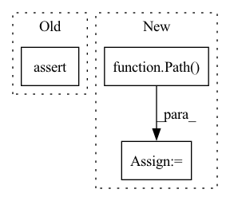

Pattern ID :37064
Before Change
assert file.exists() and file.stat().st_size > 1E6 // check
except Exception as e: // GCP
print(f"Download error: {e}")
assert redundant, "No secondary mirror"
url = f"https://storage.googleapis.com/{repo}/ckpt/{name}"
print(f"Downloading {url} to {file}...")
os.system(f"curl -L "{url}" -o "{file}" --retry 3 -C -") // curl download, retry and resume on failAfter Change
if not file.exists():
// URL specified
name = Path( urllib.parse.unquote(str(file))) .name // decode "%2F" to "/" etc.
if str(file).startswith(("http:/", "https:/")): // download
url = str(file).replace(":/", "://") // Pathlib turns :// -> :/
name = name.split("?")[0] // parse authentication https://url.com/file.txt?auth...
safe_download(file=name, url=url, min_bytes=1E5)
return name
In pattern: SUPERPATTERN
Frequency: 5
Non-data size: 3
Instances Fragment ID: 105576986
Project Name: fcakyon/yolov5-pip
Commit Name: 5afe85ae36145f9f3b511b2918b51566b7296f5d
Time: 2021-06-22
Author: 34196005+fcakyon@users.noreply.github.com
File Name: yolov5/utils/google_utils.py
M Class Name: AnonimousClass
N Class Name: AnonimousClass
M Method Name: attempt_download(2)
N Method Name: attempt_download(2)
M Parent Class:
N Parent Class:
M File Name: yolov5/utils/google_utils.py
N File Name: yolov5/utils/google_utils.py
M Start Line: 21
M End Line: 59
N Start Line: 41
N End Line: 73
Before Change
""" TODO: engaging_cluster directories
"""
if load_trained:
assert date_trained is not None, "Please provide date_trained as "DD_MM_YYYY""
else:
date_trained = date.today().strftime("%d_%m_%Y")
if LOCAL: After Change
date_trained = date.today().strftime("%d_%m_%Y")
if LOCAL:
if root is None:
root = Path( __file__) .parents[1] / "checkpoints"
checkpoint_folder = Path(root) / date_trained
try:
os.makedirs(checkpoint_folder) Fragment ID: 105576990
Project Name: coleygroup/rxn-ebm
Commit Name: 0b4748c1e95b6cc0e14bdde428a09593843cd75a
Time: 2020-10-01
Author: linmin001@e.ntu.edu.sg
File Name: experiment/utils.py
M Class Name: AnonimousClass
N Class Name: AnonimousClass
M Method Name: setup_paths(4)
N Method Name: setup_paths(3)
M Parent Class:
N Parent Class:
M File Name: experiment/utils.py
N File Name: experiment/utils.py
M Start Line: 16
M End Line: 27
N Start Line: 14
N End Line: 42
Before Change
)
def test_xjoin(input_path, paths_to_join, expected_path):
output_path = xjoin(input_path, *paths_to_join)
assert output_path == expected_path
output_path = xpathjoin(Path(input_path), *paths_to_join)
assert output_path == Path(expected_path)
After Change
)
def test_xjoin(input_path, paths_to_join, expected_path):
output_path = xjoin(input_path, *paths_to_join)
output_path = _readd_double_slash_removed_by_path(Path( output_path) .as_posix())
assert output_path == _readd_double_slash_removed_by_path(Path(expected_path).as_posix())
output_path = xpathjoin(Path(input_path), *paths_to_join)
assert output_path == Path(expected_path) Fragment ID: 105576994
Project Name: huggingface/datasets
Commit Name: 9a2dff69289dd50fe19ac47d77da223908b7e9aa
Time: 2021-09-07
Author: 42851186+lhoestq@users.noreply.github.com
File Name: tests/test_streaming_download_manager.py
M Class Name: AnonimousClass
N Class Name: AnonimousClass
M Method Name: test_xjoin(3)
N Method Name: test_xjoin(3)
M Parent Class:
N Parent Class:
M File Name: tests/test_streaming_download_manager.py
N File Name: tests/test_streaming_download_manager.py
M Start Line: 60
M End Line: 60
N Start Line: 83
N End Line: 85
Before Change
captured, _ = capsys.readouterr()
with capsys.disabled(), open(filename, encoding="utf-8") as output_file:
expected = output_file.read()
assert captured == expected
After Change
captured, _ = capsys.readouterr()
if overwrite_file:
filepath = Path( filename)
filepath.parent.mkdir(exist_ok=True)
filepath.touch(exist_ok=False)
filepath.write_text(captured)
Fragment ID: 105576995
Project Name: tyleryep/torchinfo
Commit Name: f22834ff0c9e2d504a7810b172dfa937e48fe521
Time: 2021-04-10
Author: tyep@cs.stanford.edu
File Name: conftest.py
M Class Name: AnonimousClass
N Class Name: AnonimousClass
M Method Name: verify_output(3)
N Method Name: verify_output(2)
M Parent Class:
N Parent Class:
M File Name: conftest.py
N File Name: conftest.py
M Start Line: 5
M End Line: 10
N Start Line: 8
N End Line: 22
Before Change
url = f"https://github.com/{repo}/releases/download/{tag}/{name}"
print(f"Downloading {url} to {file}...")
torch.hub.download_url_to_file(url, file)
assert file.exists() and file.stat().st_size > 1E6 // check
except Exception as e: // GCP
print(f"Download error: {e}")
assert redundant, "No secondary mirror"After Change
if not file.exists():
// URL specified
name = Path( urllib.parse.unquote(str(file))) .name // decode "%2F" to "/" etc.
if str(file).startswith(("http:/", "https:/")): // download
url = str(file).replace(":/", "://") // Pathlib turns :// -> :/
name = name.split("?")[0] // parse authentication https://url.com/file.txt?auth...
safe_download(file=name, url=url, min_bytes=1E5)
return name
Fragment ID: 105576992
Project Name: ultralytics/yolov5
Commit Name: f3c3d2ce5d85ba77336a9d0a87c6a446732cdda6
Time: 2021-06-08
Author: glenn.jocher@ultralytics.com
File Name: utils/google_utils.py
M Class Name: AnonimousClass
N Class Name: AnonimousClass
M Method Name: attempt_download(2)
N Method Name: attempt_download(2)
M Parent Class:
N Parent Class:
M File Name: utils/google_utils.py
N File Name: utils/google_utils.py
M Start Line: 21
M End Line: 59
N Start Line: 41
N End Line: 73